Last updated: 2026-07-27
Checks: 5 2
Knit directory: mos-nmf-experiments/
This reproducible R Markdown analysis was created with workflowr (version 1.7.1). The Checks tab describes the reproducibility checks that were applied when the results were created. The Past versions tab lists the development history.
The R Markdown is untracked by Git. To know which version of the R Markdown file created these results, you’ll want to first commit it to the Git repo. If you’re still working on the analysis, you can ignore this warning. When you’re finished, you can run wflow_publish to commit the R Markdown file and build the HTML.
The global environment had objects present when the code in the R Markdown file was run. These objects can affect the analysis in your R Markdown file in unknown ways. For reproduciblity it’s best to always run the code in an empty environment. Use wflow_publish or wflow_build to ensure that the code is always run in an empty environment.
The following objects were defined in the global environment when these results were created:
| Name | Class | Size |
|---|---|---|
| rstudio_pandoc | character | 232 bytes |
The command set.seed(20260624) was run prior to running the code in the R Markdown file. Setting a seed ensures that any results that rely on randomness, e.g. subsampling or permutations, are reproducible.
Great job! Recording the operating system, R version, and package versions is critical for reproducibility.
Nice! There were no cached chunks for this analysis, so you can be confident that you successfully produced the results during this run.
Great job! Using relative paths to the files within your workflowr project makes it easier to run your code on other machines.
Great! You are using Git for version control. Tracking code development and connecting the code version to the results is critical for reproducibility.
The results in this page were generated with repository version 5b76597. See the Past versions tab to see a history of the changes made to the R Markdown and HTML files.
Note that you need to be careful to ensure that all relevant files for the analysis have been committed to Git prior to generating the results (you can use wflow_publish or wflow_git_commit). workflowr only checks the R Markdown file, but you know if there are other scripts or data files that it depends on. Below is the status of the Git repository when the results were generated:
Ignored files:
Ignored: .DS_Store
Ignored: .Rhistory
Ignored: .Rproj.user/
Ignored: analysis/.DS_Store
Untracked files:
Untracked: analysis/1.poisson-susie.Rmd
Untracked: analysis/2.joint-learn-susie-poi-F.Rmd
Untracked: analysis/3.overspecify-D-mf-poi-susie.Rmd
Untracked: analysis/4.overspecify-K-mf-poi-susie.Rmd
Untracked: analysis/5.tree-scenario.Rmd
Untracked: tex/main.pdf
Untracked: tex/main.tex
Unstaged changes:
Modified: .codex/project-memory.md
Modified: analysis/_site.yml
Modified: analysis/index.Rmd
Deleted: analysis/joint-learn-susie-poi-F.Rmd
Modified: analysis/mos-nmf-overspecify-D.Rmd
Deleted: analysis/overspecify-D-mf-poi-susie.Rmd
Deleted: analysis/overspecify-K-mf-poi-susie.Rmd
Deleted: analysis/poisson-susie.Rmd
Deleted: analysis/tree-scenario.Rmd
Modified: code/miso-benchmark-utils.R
Modified: code/miso.R
Modified: paper-roadmap.md
Deleted: tex/model-ideas.tex
Note that any generated files, e.g. HTML, png, CSS, etc., are not included in this status report because it is ok for generated content to have uncommitted changes.
There are no past versions. Publish this analysis with wflow_publish() to start tracking its development.
This page creates a harder simulation for MF-Poisson-SuSiE. The true factor matrix has K_true = 7, and every observation group uses at least two factors. There are no single-factor anchor groups. The support patterns form a simple tree: all groups share factor 1, then split into branch factors 2 and 5, and some groups add one leaf factor.
We fit the model with the correct number of factors, K_fit = 7, but with an overspecified number of effects, D_fit = 5.
The purpose of this page is to move beyond anchor-style simulations. If no group is generated from a single factor, recovery must come from repeated co-occurrence patterns rather than from easy one-factor examples.
source("code/joint-learn-susie-poi-F.R")set.seed(47)
N = 1800
M = 2000
K_true = 7
K_fit = 7
D_true = 3
D_fit = 5
group_supports = list(
c(1, 2, 3),
c(1, 2, 4),
c(1, 5, 6),
c(1, 5, 7),
c(1, 2),
c(1, 5)
)
n_groups = length(group_supports)
n_per_group = N / n_groups
grp = rep(seq_len(n_groups), each = n_per_group)
F0 = matrix(rgamma(M * K_true, shape = 0.1, rate = 0.01),
nrow = K_true, ncol = M)
F0 = F0 / rowSums(F0)
L = matrix(0, nrow = N, ncol = K_true)
for (g in seq_len(n_groups)) {
idx = which(grp == g)
support = group_supports[[g]]
L[idx, support] = matrix(rgamma(length(idx) * length(support),
shape = 18, rate = 1),
nrow = length(idx), ncol = length(support))
}
rate = L %*% F0
Y = matrix(rpois(N * M, rate), nrow = N, ncol = M)
data.frame(
N = N,
M = M,
K_true = K_true,
K_fit = K_fit,
D_true = D_true,
D_fit = D_fit,
total_count = sum(Y),
nonzero_entries = sum(Y > 0)
) N M K_true K_fit D_true D_fit total_count nonzero_entries
1 1800 2000 7 7 3 5 87274 82465true_patterns = vapply(group_supports, function(support) {
paste(support, collapse = ",")
}, character(1))
data.frame(group = seq_len(n_groups), true_active_factors = true_patterns) group true_active_factors
1 1 1,2,3
2 2 1,2,4
3 3 1,5,6
4 4 1,5,7
5 5 1,2
6 6 1,5matplot(t(F0[, 1:150]), type = "l", lty = 1,
xlab = "m", ylab = "F0[k, m]",
main = "True factor rows")
legend("topright", legend = paste("factor", seq_len(K_true)),
col = seq_len(K_true), lty = 1, bty = "n")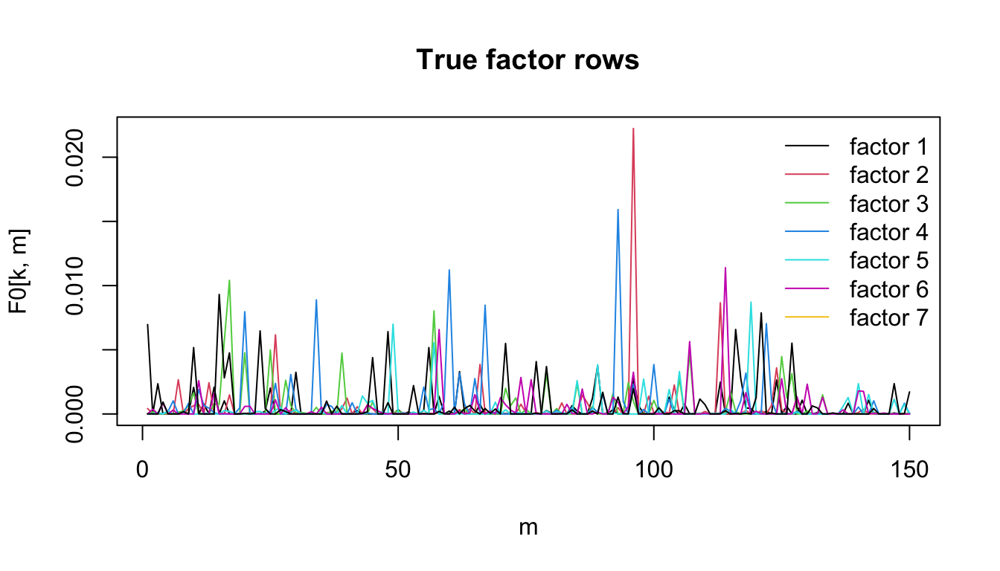
row_cosine = function(A, B) {
A_norm = sqrt(rowSums(A^2))
B_norm = sqrt(rowSums(B^2))
(A %*% t(B)) / (A_norm %o% B_norm)
}
all_permutations = function(x) {
if (length(x) == 1) return(matrix(x, nrow = 1))
do.call(rbind, lapply(seq_along(x), function(i) {
cbind(x[i], all_permutations(x[-i]))
}))
}
match_factor_rows = function(F_hat, F_true) {
K = nrow(F_true)
similarity = row_cosine(F_hat, F_true)
perms = all_permutations(seq_len(K))
scores = apply(perms, 1, function(p) {
sum(similarity[cbind(seq_len(K), p)])
})
learned_to_true = perms[which.max(scores), ]
data.frame(
learned_factor = seq_len(K),
matched_true_factor = learned_to_true,
cosine = similarity[cbind(seq_len(K), learned_to_true)]
)
}
loading_scores = function(fit) {
E_beta = fit$alpha / fit$lambda
apply(fit$gamma_bar * E_beta, c(1, 3), sum)
}
posterior_inclusion_scores = function(fit) {
1 - apply(1 - fit$gamma_bar, c(1, 3), prod)
}
effect_sizes = function(fit) {
E_beta = fit$alpha / fit$lambda
rowSums(fit$gamma_bar * E_beta, dims = 2)
}
effect_gamma_entropy = function(fit) {
entropy = -fit$gamma_bar * log(fit$gamma_bar)
entropy[is.nan(entropy)] = 0
rowSums(entropy, dims = 2) / log(dim(fit$gamma_bar)[3])
}
effect_max_gamma = function(fit) {
apply(fit$gamma_bar, c(1, 2), max)
}
effect_top_factor = function(fit) {
apply(fit$gamma_bar, c(1, 2), which.max)
}
rank_by_effect_size = function(effect_mat, size_mat) {
out = matrix(0, nrow = nrow(effect_mat), ncol = ncol(effect_mat))
for (i in seq_len(nrow(effect_mat))) {
ord = order(size_mat[i, ], decreasing = TRUE)
out[i, ] = effect_mat[i, ord]
}
out
}
rank_gamma_bar_by_size = function(fit, size_mat) {
N = dim(fit$gamma_bar)[1]
D = dim(fit$gamma_bar)[2]
K = dim(fit$gamma_bar)[3]
out = array(0, dim = c(N, D, K))
for (i in seq_len(N)) {
ord = order(size_mat[i, ], decreasing = TRUE)
out[i, , ] = fit$gamma_bar[i, ord, ]
}
out
}
map_scores_to_true = function(scores, learned_to_true) {
K = length(learned_to_true)
out = matrix(0, nrow = nrow(scores), ncol = K)
for (k in seq_len(K)) {
out[, learned_to_true[k]] = out[, learned_to_true[k]] + scores[, k]
}
out
}
support_labels_from_scores = function(scores, support_sizes) {
vapply(seq_len(nrow(scores)), function(i) {
active = order(scores[i, ], decreasing = TRUE)[seq_len(support_sizes[i])]
paste(sort(active), collapse = ",")
}, character(1))
}
normalized_entropy = function(scores) {
prob = scores / rowSums(scores)
entropy = -prob * log(prob)
entropy[is.nan(entropy)] = 0
mean(rowSums(entropy)) / log(ncol(scores))
}
extra_effect_mass_fraction = function(size_mat, true_support_size) {
vapply(seq_len(nrow(size_mat)), function(i) {
sorted_sizes = sort(size_mat[i, ], decreasing = TRUE)
extra_idx = seq.int(true_support_size[i] + 1, length(sorted_sizes))
sum(sorted_sizes[extra_idx]) / sum(sorted_sizes)
}, numeric(1))
}
plot_cosine_heatmap = function(cosine_mat, main) {
image(x = seq_len(ncol(cosine_mat)), y = seq_len(nrow(cosine_mat)),
z = t(cosine_mat), axes = FALSE, xlab = "True factor",
ylab = "Fitted factor", main = main, col = hcl.colors(100, "YlOrRd"))
axis(1, at = seq_len(ncol(cosine_mat)),
labels = paste0("true ", seq_len(ncol(cosine_mat))))
axis(2, at = seq_len(nrow(cosine_mat)),
labels = paste0("fit ", seq_len(nrow(cosine_mat))), las = 1)
for (k_fit in seq_len(nrow(cosine_mat))) {
for (k_true in seq_len(ncol(cosine_mat))) {
text(k_true, k_fit, sprintf("%.2f", cosine_mat[k_fit, k_true]),
cex = 0.65)
}
}
box()
}
plot_recovered_support = function(scores_true_space, main) {
recovered = matrix(0, nrow = K_true, ncol = N)
for (i in seq_len(N)) {
active = order(scores_true_space[i, ], decreasing = TRUE)[
seq_len(true_support_size[i])
]
recovered[active, i] = 1
}
image(x = seq_len(N), y = seq_len(K_true), z = t(recovered),
axes = FALSE, xlab = "Sample", ylab = "Recovered true factor",
main = main, col = c("white", "firebrick"))
axis(1, at = seq(n_per_group / 2, N, by = n_per_group),
labels = paste("G", seq_len(n_groups)))
axis(2, at = seq_len(K_true), labels = seq_len(K_true), las = 1)
abline(v = seq(n_per_group, N - n_per_group, by = n_per_group),
col = "gray80", lty = 3)
box()
}
plot_group_factor_heatmap = function(group_factor_mat, main, ylab) {
image(x = seq_len(ncol(group_factor_mat)), y = seq_len(nrow(group_factor_mat)),
z = t(group_factor_mat), axes = FALSE, xlab = "True factor",
ylab = ylab, main = main, col = hcl.colors(100, "YlOrRd"))
axis(1, at = seq_len(ncol(group_factor_mat)),
labels = seq_len(ncol(group_factor_mat)))
axis(2, at = seq_len(nrow(group_factor_mat)),
labels = paste("G", seq_len(nrow(group_factor_mat))), las = 1)
for (g in seq_len(nrow(group_factor_mat))) {
for (k in seq_len(ncol(group_factor_mat))) {
text(k, g, sprintf("%.2f", group_factor_mat[g, k]), cex = 0.65)
}
}
box()
}
plot_rank_heatmap = function(rank_mat, main, ylab, col) {
image(x = seq_len(N), y = seq_len(ncol(rank_mat)), z = rank_mat,
axes = FALSE, xlab = "Sample", ylab = ylab,
main = main, col = col)
axis(1, at = seq(n_per_group / 2, N, by = n_per_group),
labels = paste("G", seq_len(n_groups)))
axis(2, at = seq_len(ncol(rank_mat)), labels = seq_len(ncol(rank_mat)),
las = 1)
abline(v = seq(n_per_group, N - n_per_group, by = n_per_group),
col = "gray80", lty = 3)
box()
}
plot_factor_id_heatmap = function(rank_top_factor, main) {
image(x = seq_len(N), y = seq_len(ncol(rank_top_factor)),
z = rank_top_factor, axes = FALSE, xlab = "Sample",
ylab = "Effect rank", main = main, col = seq_len(K_fit))
axis(1, at = seq(n_per_group / 2, N, by = n_per_group),
labels = paste("G", seq_len(n_groups)))
axis(2, at = seq_len(ncol(rank_top_factor)),
labels = seq_len(ncol(rank_top_factor)), las = 1)
abline(v = seq(n_per_group, N - n_per_group, by = n_per_group),
col = "gray80", lty = 3)
legend("topright", legend = paste("factor", seq_len(K_fit)),
fill = seq_len(K_fit), bty = "n", cex = 0.8)
box()
}
plot_single_gamma_heatmap = function(gamma_mat, main) {
D = nrow(gamma_mat)
K = ncol(gamma_mat)
image(x = seq_len(K), y = seq_len(D), z = t(gamma_mat),
axes = FALSE, xlab = "Fitted factor", ylab = "Effect rank",
main = main, col = hcl.colors(100, "YlOrRd"))
axis(1, at = seq_len(K), labels = seq_len(K))
axis(2, at = seq_len(D), labels = seq_len(D), las = 1)
box()
}
plot_representative_gamma = function(rank_gamma_bar, representative_idx) {
op = par(mfrow = c(2, 3), mar = c(4, 4, 3, 1))
on.exit(par(op))
for (j in seq_along(representative_idx)) {
i = representative_idx[j]
plot_single_gamma_heatmap(
rank_gamma_bar[i, , ],
paste("Group", grp[i], "sample", i)
)
}
}
true_support_size = rowSums(L > 0)
true_support_label = apply(L > 0, 1, function(x) {
paste(which(x), collapse = ",")
})fit = mf_poi_susie(
Y = Y,
K = K_fit,
D = D_fit,
max_iters = 100,
update_prior = TRUE,
break_symmetry = FALSE,
init_seed = 1,
init_F = "poisson_nmf",
nmf_iters = 200,
init_gamma_from_nmf = TRUE,
gamma_step_init = 0.1,
gamma_step_ramp = 50,
F_step_init = 0.05,
F_step_ramp = 75,
elbo_every = 5,
tol = 5e-4,
min_iters = 20,
patience = 2
)idx = fit$elbo_iter
plot(idx, fit$elbo[idx], type = "l", xlab = "Iteration", ylab = "ELBO",
main = "Variational objective")
points(idx, fit$elbo[idx], pch = 19, cex = 0.5)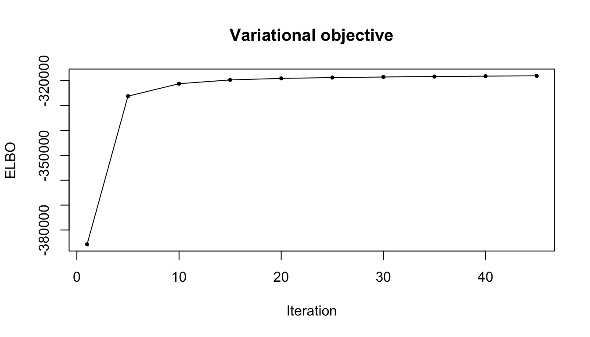
data.frame(
converged = fit$converged,
n_iter = fit$n_iter,
final_elbo = tail(fit$elbo[fit$elbo_iter], 1)
) converged n_iter final_elbo
1 TRUE 45 -318073.2factor_match = match_factor_rows(fit$F, F0)
learned_to_true = factor_match$matched_true_factor
factor_match learned_factor matched_true_factor cosine
1 1 2 0.8147717
2 2 7 0.7775340
3 3 5 0.8877671
4 4 4 0.7034718
5 5 1 0.8945475
6 6 6 0.8285534
7 7 3 0.1049664data.frame(
mean_matched_cosine = mean(factor_match$cosine),
min_matched_cosine = min(factor_match$cosine)
) mean_matched_cosine min_matched_cosine
1 0.7159446 0.1049664cosine_fit_true = row_cosine(fit$F, F0)
plot_cosine_heatmap(
cosine_fit_true,
"Cosine similarity between fitted and true factors"
)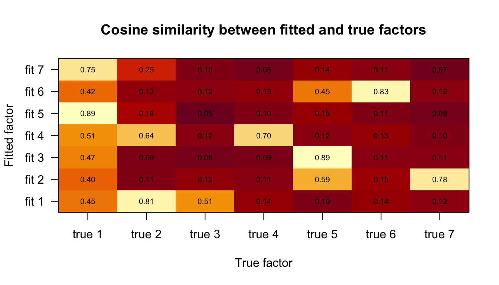
matplot(t(fit$F[, 1:150]), type = "l", lty = 1,
xlab = "m", ylab = "F[k, m]",
main = "Learned factor rows")
legend("topright", legend = paste("fit", seq_len(K_fit)),
col = seq_len(K_fit), lty = 1, bty = "n")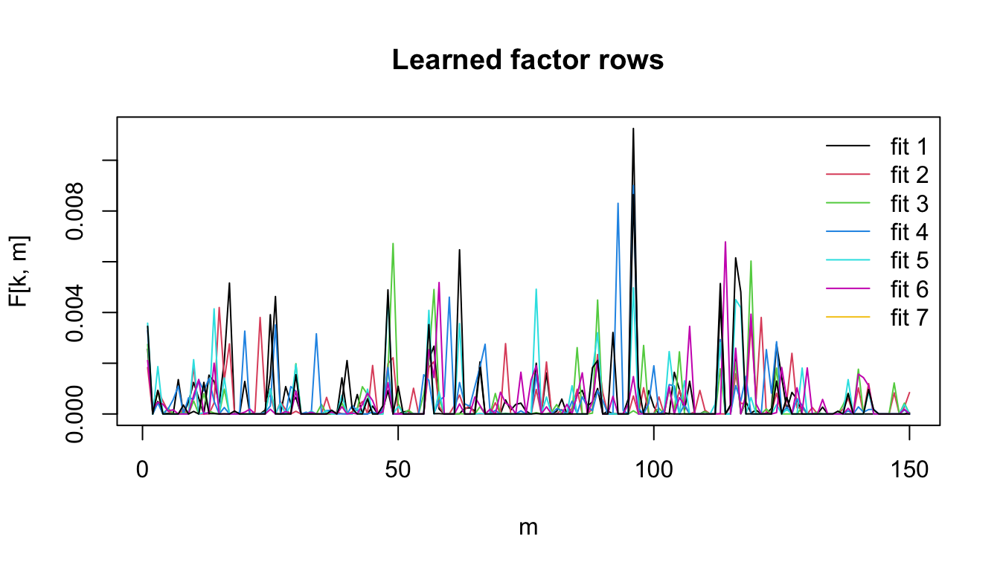
fit_loading_scores = loading_scores(fit)
fit_pip_scores = posterior_inclusion_scores(fit)
scores_true_space = map_scores_to_true(fit_loading_scores, learned_to_true)
pip_true_space = map_scores_to_true(fit_pip_scores, learned_to_true)
sizes = effect_sizes(fit)
extra_mass = extra_effect_mass_fraction(sizes, true_support_size)
support_recovery = data.frame(
exact_support_accuracy = mean(
support_labels_from_scores(scores_true_space, true_support_size) ==
true_support_label
),
mean_normalized_loading_entropy = normalized_entropy(scores_true_space),
mean_extra_effect_mass_fraction = mean(extra_mass),
median_extra_effect_mass_fraction = median(extra_mass),
q90_extra_effect_mass_fraction = as.numeric(quantile(extra_mass, 0.9))
)
support_recovery exact_support_accuracy mean_normalized_loading_entropy
1 0.4 0.3554378
mean_extra_effect_mass_fraction median_extra_effect_mass_fraction
1 0.03542076 0.0006476908
q90_extra_effect_mass_fraction
1 0.1395606plot_recovered_support(
scores_true_space,
"Recovered supports in the tree scenario"
)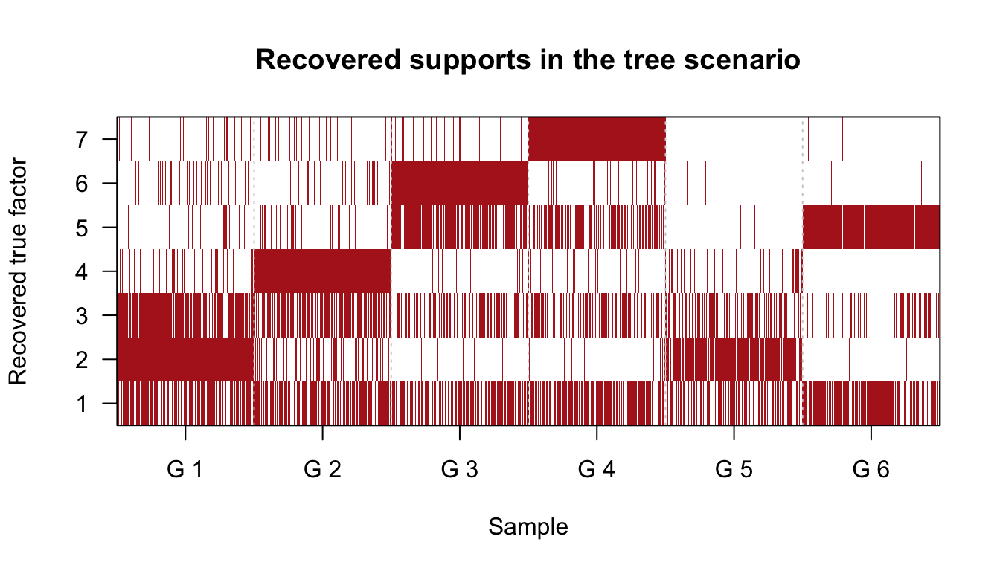
recovered_label = support_labels_from_scores(scores_true_space,
true_support_size)
recovered_by_group = do.call(rbind, lapply(seq_len(n_groups), function(g) {
tab = table(recovered_label[grp == g])
data.frame(group = g, recovered_pattern = names(tab), n = as.integer(tab),
row.names = NULL)
}))
recovered_by_group group recovered_pattern n
1 1 1,2,3 125
2 1 1,2,4 15
3 1 1,2,5 12
4 1 1,2,6 13
5 1 1,2,7 13
6 1 2,3,4 34
7 1 2,3,5 20
8 1 2,3,6 30
9 1 2,3,7 24
10 1 2,4,5 3
11 1 2,4,7 3
12 1 2,5,6 3
13 1 2,5,7 3
14 1 2,6,7 2
15 2 1,2,4 44
16 2 1,3,4 115
17 2 1,4,5 21
18 2 1,4,6 14
19 2 1,4,7 15
20 2 2,3,4 22
21 2 2,4,5 7
22 2 2,4,6 6
23 2 2,4,7 4
24 2 3,4,5 17
25 2 3,4,6 13
26 2 3,4,7 12
27 2 4,5,6 1
28 2 4,5,7 7
29 2 4,6,7 2
30 3 1,2,6 4
31 3 1,3,6 27
32 3 1,4,6 12
33 3 1,5,6 125
34 3 1,6,7 13
35 3 2,5,6 4
36 3 3,4,6 1
37 3 3,5,6 77
38 3 3,6,7 4
39 3 4,5,6 3
40 3 5,6,7 30
41 4 1,2,7 10
42 4 1,3,7 73
43 4 1,4,7 11
44 4 1,5,7 94
45 4 1,6,7 12
46 4 2,3,7 4
47 4 2,5,7 2
48 4 2,6,7 1
49 4 3,4,7 11
50 4 3,5,7 55
51 4 3,6,7 8
52 4 4,5,7 6
53 4 5,6,7 13
54 5 1,2 124
55 5 1,3 12
56 5 1,4 17
57 5 2,3 116
58 5 2,4 15
59 5 2,5 4
60 5 2,6 4
61 5 2,7 1
62 5 3,4 7
63 6 1,3 5
64 6 1,5 208
65 6 1,7 1
66 6 2,5 2
67 6 3,5 74
68 6 3,6 1
69 6 3,7 1
70 6 4,5 2
71 6 5,6 4
72 6 5,7 2These heatmaps ask whether the fitted model recovers the tree structure after matching learned factors to true factors. The first uses expected loading mass; the second uses PIPs derived from gamma_bar.
group_loading_mean = do.call(rbind, lapply(seq_len(n_groups), function(g) {
colMeans(scores_true_space[grp == g, , drop = FALSE])
}))
group_loading_share = group_loading_mean / rowSums(group_loading_mean)
plot_group_factor_heatmap(
group_loading_share,
"Group mean posterior loading share",
"Group"
)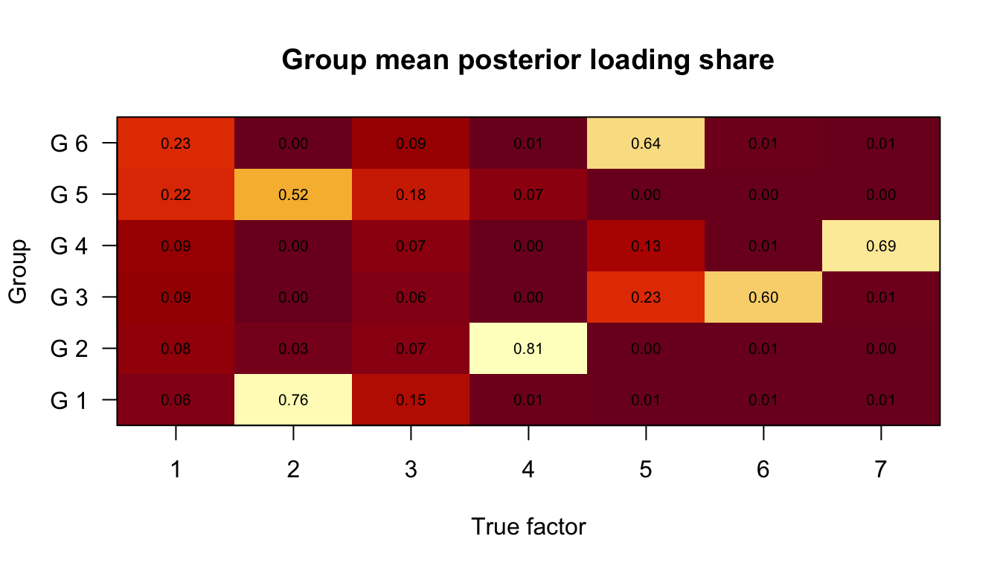
group_pip_mean = do.call(rbind, lapply(seq_len(n_groups), function(g) {
colMeans(pip_true_space[grp == g, , drop = FALSE])
}))
group_pip_share = group_pip_mean / rowSums(group_pip_mean)
plot_group_factor_heatmap(
group_pip_share,
"Group mean posterior PIP share",
"Group"
)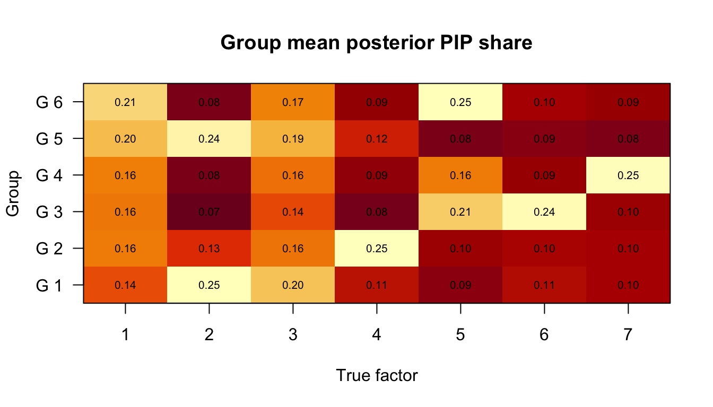
branch_scores = data.frame(
group = seq_len(n_groups),
true_pattern = true_patterns,
root_1 = group_loading_share[, 1],
branch_2 = group_loading_share[, 2],
branch_5 = group_loading_share[, 5],
leaf_3 = group_loading_share[, 3],
leaf_4 = group_loading_share[, 4],
leaf_6 = group_loading_share[, 6],
leaf_7 = group_loading_share[, 7]
)
branch_scores group true_pattern root_1 branch_2 branch_5 leaf_3 leaf_4
1 1 1,2,3 0.05662254 0.762368946 0.005184149 0.14652061 0.012021046
2 2 1,2,4 0.07979020 0.029755426 0.004007666 0.06657730 0.808677703
3 3 1,5,6 0.08976662 0.002432571 0.234094247 0.05764578 0.004156545
4 4 1,5,7 0.09432255 0.003472957 0.129729398 0.07019925 0.004882432
5 5 1,2 0.22190175 0.515753393 0.003205757 0.18231519 0.069104027
6 6 1,5 0.23435440 0.002160813 0.640840145 0.09454761 0.005729320
leaf_6 leaf_7
1 0.009632516 0.007650191
2 0.006205954 0.004985747
3 0.600009312 0.011894927
4 0.007352110 0.690041301
5 0.004568563 0.003151321
6 0.012478600 0.009889113The hardest separations are expected to be between sibling groups: groups 1 and 2 share factors 1 and 2 and differ only by factor 3 versus 4; groups 3 and 4 share factors 1 and 5 and differ only by factor 6 versus 7. Groups 5 and 6 test whether the model can recover branch-level supports without any leaf factor.
gamma_entropy = effect_gamma_entropy(fit)
max_gamma = effect_max_gamma(fit)
top_factor = effect_top_factor(fit)
rank_gamma_bar = rank_gamma_bar_by_size(fit, sizes)
rank_size = rank_by_effect_size(sizes, sizes)
rank_entropy = rank_by_effect_size(gamma_entropy, sizes)
rank_max_gamma = rank_by_effect_size(max_gamma, sizes)
rank_top_factor = rank_by_effect_size(top_factor, sizes)
rank_summary = do.call(rbind, lapply(seq_len(D_fit), function(r) {
data.frame(
effect_rank = r,
mean_expected_size = mean(rank_size[, r]),
median_expected_size = median(rank_size[, r]),
mean_gamma_entropy = mean(rank_entropy[, r]),
median_gamma_entropy = median(rank_entropy[, r]),
mean_max_gamma = mean(rank_max_gamma[, r]),
median_max_gamma = median(rank_max_gamma[, r]),
selected_as_extra_fraction = mean(r > true_support_size)
)
}))
rank_summary effect_rank mean_expected_size median_expected_size mean_gamma_entropy
1 1 34.0770131 32.457329769 0.001143121
2 2 10.8007249 10.412742905 0.087403369
3 3 3.1131451 1.827890703 0.485126310
4 4 0.5071712 0.011998788 0.871013993
5 5 0.0400948 0.008232219 0.988806913
median_gamma_entropy mean_max_gamma median_max_gamma
1 4.224351e-20 0.9993404 1.0000000
2 9.828171e-07 0.9278798 0.9999999
3 2.852976e-01 0.5879038 0.7929257
4 1.000000e+00 0.2547956 0.1428901
5 1.000000e+00 0.1524459 0.1428694
selected_as_extra_fraction
1 0.0000000
2 0.0000000
3 0.3333333
4 1.0000000
5 1.0000000boxplot(
split(as.vector(rank_size), col(rank_size)),
xlab = "Effect rank within observation",
ylab = "Posterior expected effect size",
main = "Effect sizes after fitting D = 5"
)
abline(v = D_true + 0.5, col = "gray50", lty = 2)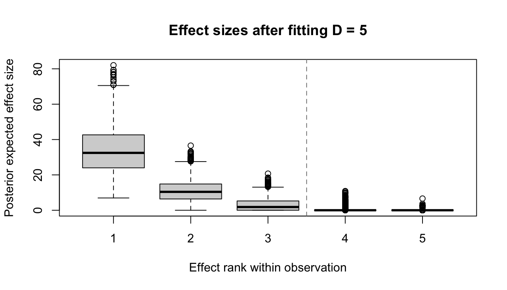
boxplot(
split(as.vector(rank_entropy), col(rank_entropy)),
xlab = "Effect rank within observation",
ylab = "Normalized entropy of gamma_bar",
main = "Posterior factor-assignment uncertainty by effect rank"
)
abline(v = D_true + 0.5, col = "gray50", lty = 2)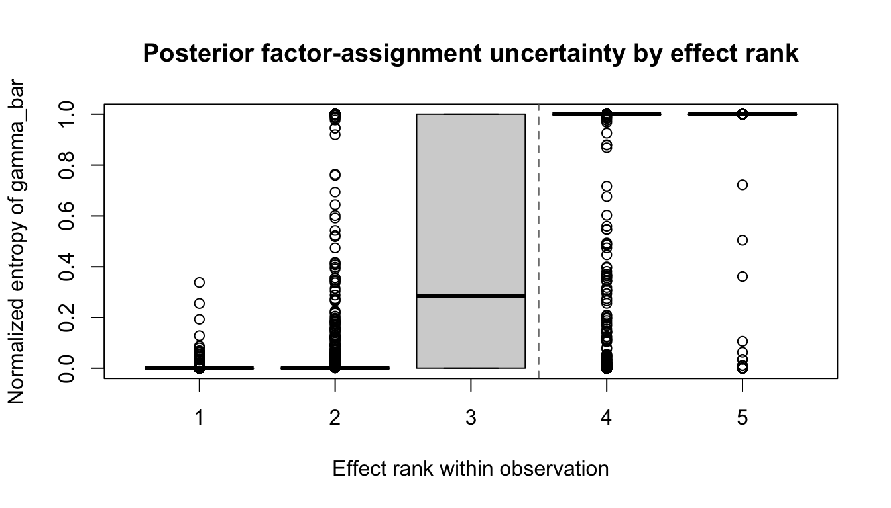
plot(
as.vector(rank_size),
as.vector(rank_entropy),
pch = 20,
col = rgb(0.6, 0, 0, 0.25),
xlab = "Posterior expected effect size",
ylab = "Normalized entropy of gamma_bar",
main = "Effect size versus gamma_bar uncertainty"
)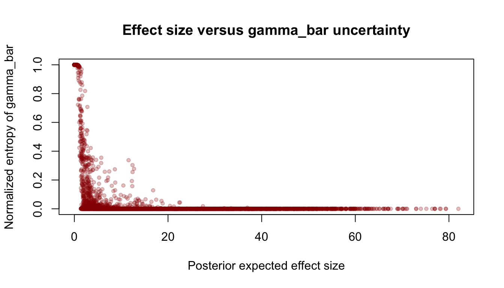
plot_rank_heatmap(
rank_size,
"Posterior expected effect size by rank",
"Effect rank",
hcl.colors(100, "YlOrRd")
)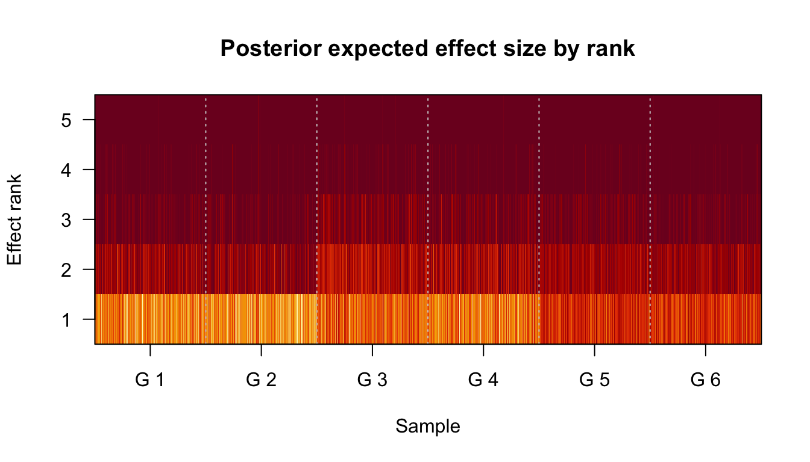
plot_rank_heatmap(
rank_entropy,
"Normalized gamma_bar entropy by effect rank",
"Effect rank",
hcl.colors(100, "YlGnBu")
)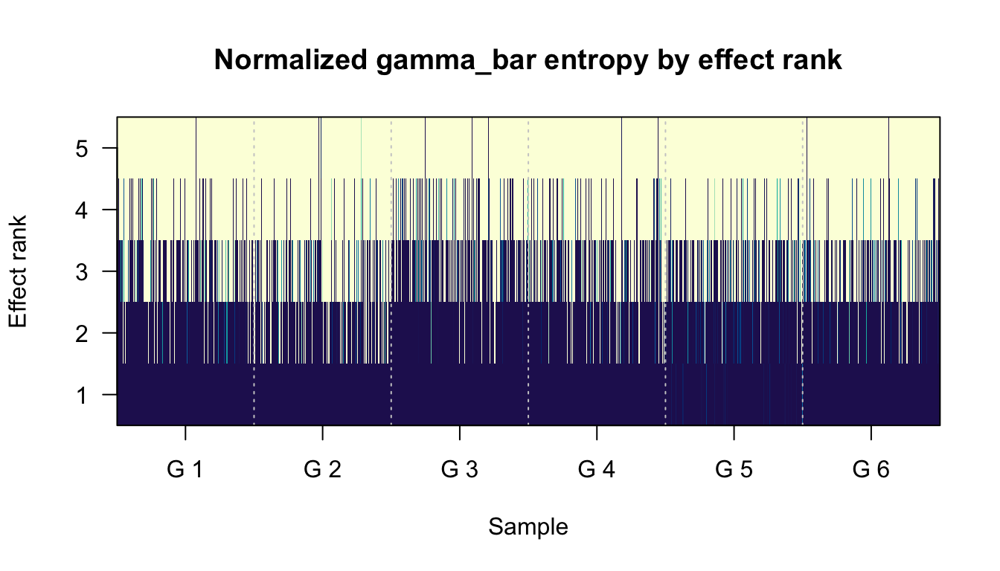
plot_factor_id_heatmap(
rank_top_factor,
"Top posterior fitted factor by effect rank"
)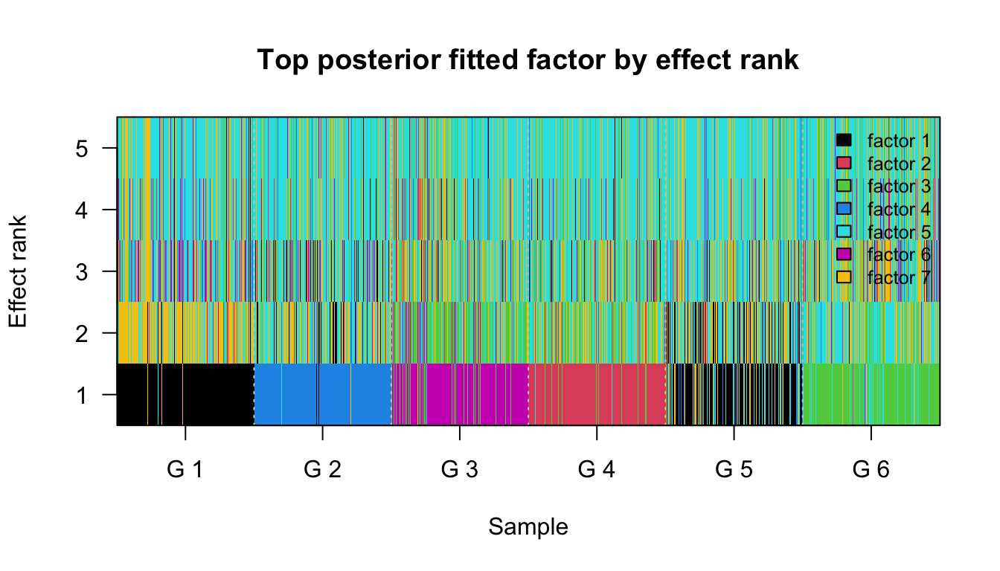
Rows are fitted effects sorted by posterior expected size. Columns are fitted factors. Since D_fit = 5 but the true support size is two or three, the lower effect ranks should ideally be small and diffuse.
representative_idx = vapply(seq_len(n_groups), function(g) {
which(grp == g)[1]
}, integer(1))
plot_representative_gamma(rank_gamma_bar, representative_idx)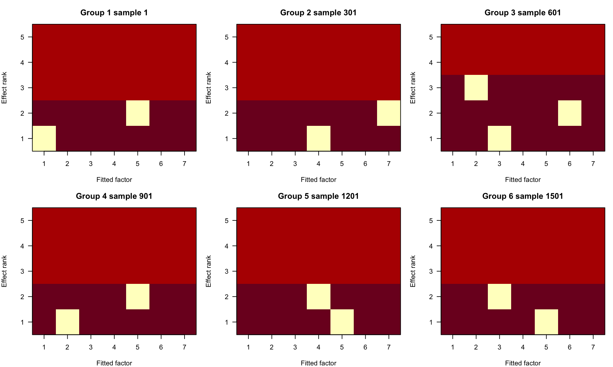
This setting removes the easiest anchors: no observation group is generated from a single factor. Recovery therefore depends on separating factors through shared and contrasting co-occurrence patterns. Factor 1 is a root factor present in every group; factors 2 and 5 are branch factors; factors 3, 4, 6, and 7 are leaf factors that only appear in one group each.
For fixed learned F, gamma_bar quantifies posterior uncertainty in the loading decomposition. In this tree scenario, diffuse gamma_bar in lower-ranked effects indicates that the extra fitted dimensions are not confidently assigned to a factor. Sizable lower-ranked effects with low entropy are more concerning: they mean the overspecified D is acting as additional confident components, which can blur the intended tree support patterns.
This scenario is a stress test for support recovery without single-factor anchors. It motivates the MiSo layer: the important structure is no longer only which factors appear in each observation, but which sparsity patterns repeat across groups. The posterior quantities from MF-Poisson-SuSiE remain useful diagnostics, but the next modeling step should share motif-level structure across observations rather than fitting each observation independently.
sessionInfo()R version 4.3.2 (2023-10-31)
Platform: aarch64-apple-darwin20 (64-bit)
Running under: macOS 26.5.1
Matrix products: default
BLAS: /System/Library/Frameworks/Accelerate.framework/Versions/A/Frameworks/vecLib.framework/Versions/A/libBLAS.dylib
LAPACK: /Library/Frameworks/R.framework/Versions/4.3-arm64/Resources/lib/libRlapack.dylib; LAPACK version 3.11.0
locale:
[1] C.UTF-8/C.UTF-8/C.UTF-8/C/C.UTF-8/C.UTF-8
time zone: America/New_York
tzcode source: internal
attached base packages:
[1] stats graphics grDevices utils datasets methods base
other attached packages:
[1] workflowr_1.7.1
loaded via a namespace (and not attached):
[1] vctrs_0.6.5 httr_1.4.7 cli_3.6.5 knitr_1.50
[5] rlang_1.1.6 xfun_0.52 stringi_1.8.7 otel_0.2.0
[9] processx_3.8.6 promises_1.5.0 jsonlite_2.0.0 glue_1.8.0
[13] rprojroot_2.1.1 git2r_0.36.2 htmltools_0.5.8.1 httpuv_1.6.16
[17] ps_1.9.1 sass_0.4.10 rmarkdown_2.29 jquerylib_0.1.4
[21] tibble_3.3.0 evaluate_1.0.5 fastmap_1.2.0 yaml_2.3.10
[25] lifecycle_1.0.4 whisker_0.4.1 stringr_1.6.0 compiler_4.3.2
[29] fs_1.6.6 pkgconfig_2.0.3 Rcpp_1.1.0 rstudioapi_0.17.1
[33] later_1.4.2 digest_0.6.39 R6_2.6.1 pillar_1.11.1
[37] callr_3.7.6 magrittr_2.0.3 bslib_0.9.0 tools_4.3.2
[41] cachem_1.1.0 getPass_0.2-4